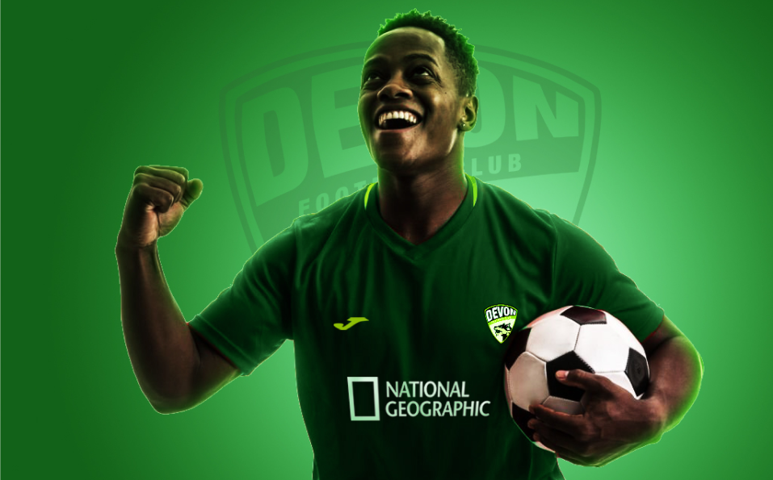

Devon FC
Client
Industry
Service
Devon Football Club
Sport, Football
Brand Identity, Art Direction
The Hounds
chapter of
new begining
Summary
Devon Football Club is a club based in Dartmoor, Devon in the
United Kingdom. It was founded in 1978 by Robert Schumer.
The Club has participated in the EFL Championship and currently
in the English Premier League following a promotion in 2018 and
has been fighting for a place in the League. The club recently
undergone a takeover and now is led by Bob Gary, the
management has decided to change the image of the club
perceived by the fans and position among the best football club in
the country.
Goal
To create an identity that will show the perfect image of the Club.
We would love to show Devon FC love and partnership to Nature
and wildlife. Devon want to create an atmosphere of security, love
an trust to their fans and client.
The Logo
We belive the hounds mascot is a prominent element of the
club and its also due to the town love of dogs/hounds
A club of
inclusivity
A Game for everyone
Design Assets
All assets were designed
carefully and thoughtfully
designed to suits the
brand tone and voice
Art Direction
Whole lots of green
I mean different kinds of green
which is for nature as a club that has been an advocate of
conservation and preservation of nature over the years.
End of project
Next Project